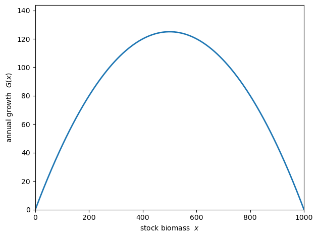
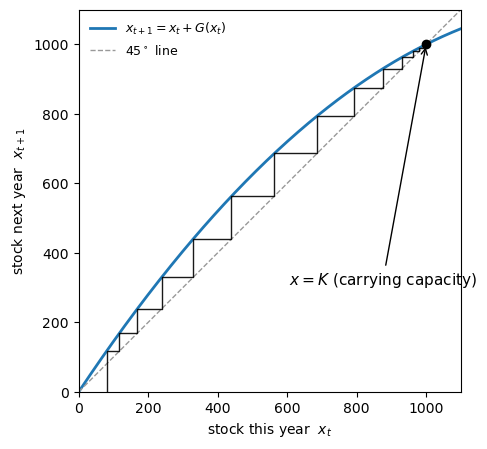
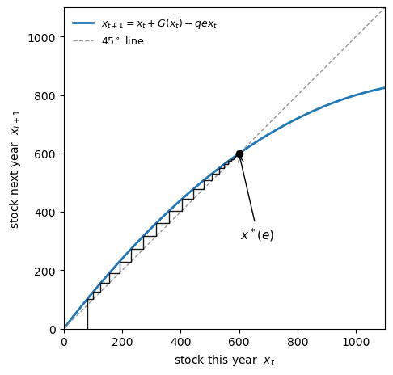
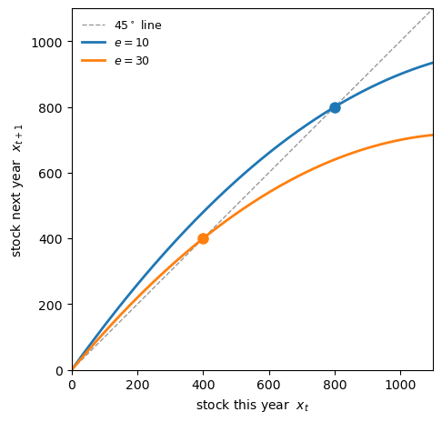
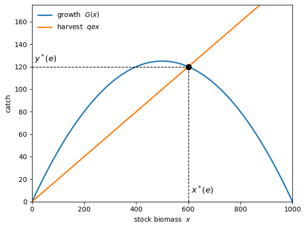
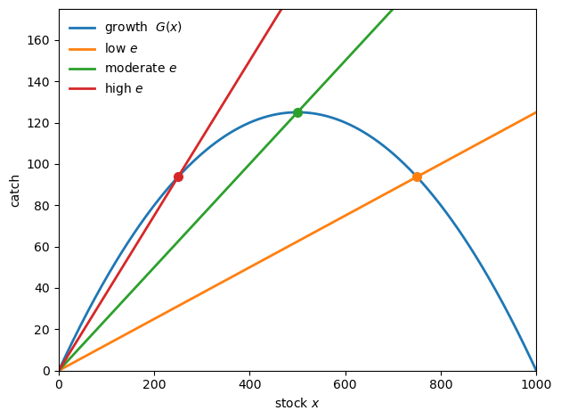
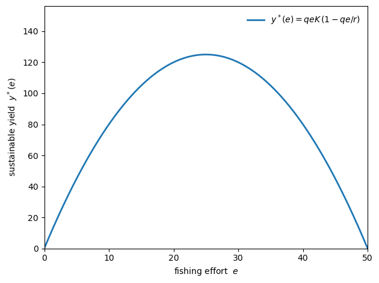
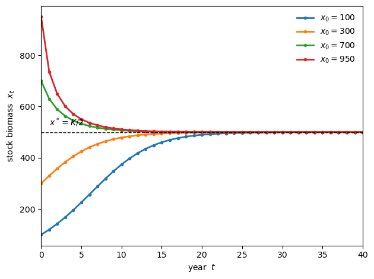
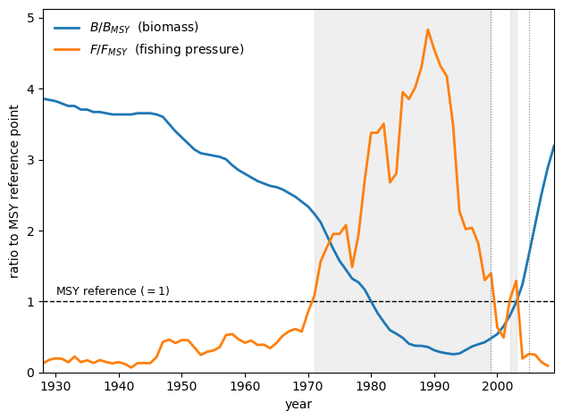
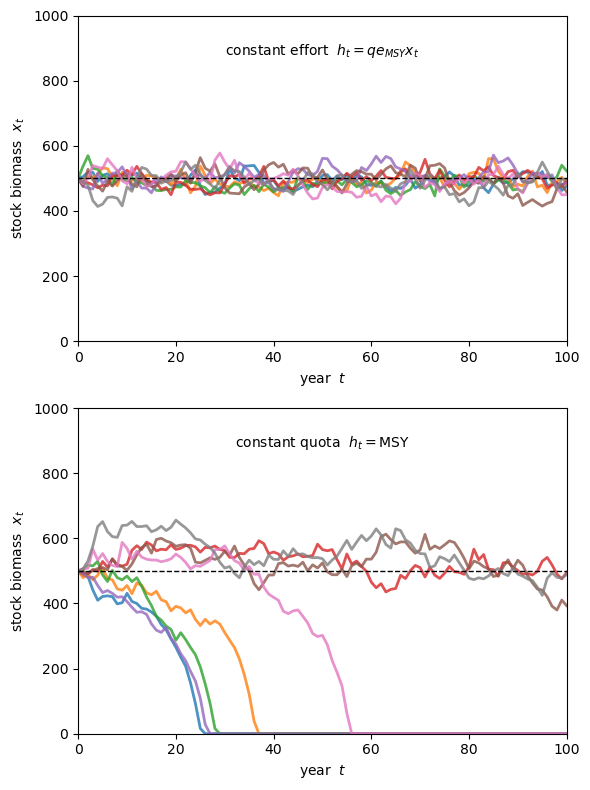

26. Fishery Management: Quotas and MSY#
26.1. Overview#
In this lecture we study fishery management through quotas and maximum sustainable yield (MSY).
The MSY is defined as the largest catch a fishery can support year after year without running itself down.
After the Second World War, fisheries managers around the world adopted MSY and imposed quotas and restrictions based on MSY.
In some cases these management efforts were successful.
In other cases outcomes were disappointing.
In fact, several major fisheries collapsed under MSY-based management, including the Peruvian anchovy in the 1970s and the Atlantic cod off Newfoundland in 1992.
In this lecture we provide an introduction to MSY-based management of fisheries.
Our main task is to explain how MSY is computed.
We begin with a relatively elementary treatment in discrete time.
Next we discuss a continuous time formulation that conveys the same ideas via calculus.
Finally, we turn to problems associated with MSY and quotas derived from MSY.
To illustrate these ideas, we add random shocks to the model and see how collapse can easily occur.
The MSY framework is due to Schaefer [1954] and Gordon [1954]; a classic textbook treatment is Clark [1990].
This lecture was partly inspired by a discussion of MSY posted on Maths from the past.
Let’s start with some standard imports.
import numpy as np
import pandas as pd
import matplotlib.pyplot as plt
We will use the following parameterization throughout.
r = 0.5 # intrinsic growth rate (per year)
K = 1000.0 # carrying capacity (tonnes)
q = 0.01 # catchability coefficient
26.2. The model#
We build the model in two steps: first how the stock grows on its own, then what fishing does to it.
26.2.1. Growth without fishing#
In the model, the population adds new fish each year according to the logistic growth function
Here
\(x\) is the current biomass — the total weight of fish in tonnes,
\(G(x)\) is annual growth in biomass — the difference between current and next year’s biomass,
\(r > 0\) is called the intrinsic growth rate, and
\(K > 0\) is called the carrying capacity.
Let’s encode the growth function in Python.
def G(x):
"Logistic growth over one year."
return r * x * (1 - x / K)
As the next figure shows, growth is small when the stock is small (few spawners) and small again when the stock is near \(K\) (crowding, limited food), and is largest in between.
x_grid = np.linspace(0, K, 400)
fig, ax = plt.subplots()
ax.plot(x_grid, G(x_grid), lw=2)
ax.set_xlabel('stock biomass $x$')
ax.set_ylabel('annual growth $G(x)$')
ax.set_xlim(0, K)
ax.set_ylim(0, G(K / 2) * 1.15)
plt.tight_layout()
plt.show()
{kind=link}

Fig. 26.1 Logistic growth#
With no fishing, next year’s stock is just this year’s stock plus current growth:
One way to see where the dynamics lead is via a 45-degree diagram, which plots next year’s stock \(x_{t+1}\) against this year’s stock \(x_t\).
Wherever the curve crosses the \(45^\circ\) line we have \(x_{t+1} = x_t\).
The corresponding value of \(x\) obeys \(x = x + G(x)\).
Such an \(x\) is called a steady state: a stock that exactly reproduces itself.
We can trace the dynamics of the model by “staircasing”: from a starting stock go up to the curve (that gives next year’s stock), across to the \(45^\circ\) line (that becomes this year’s stock), and repeat.
We start with some plotting code.
Here is the unfished case.
fig, ax = plt.subplots(figsize=(4.95, 4.95))
plot_45(ax, lambda x: x + G(x), x0=80, x_max=1100,
steady_state=K, ss_label=r'$x=K$ (carrying capacity)',
map_label=r'$x_{t+1}=x_t+G(x_t)$')
plt.tight_layout()
plt.show()
{kind=link}

Fig. 26.2 Stock dynamics without fishing#
Starting from any positive stock and following the staircase, we see that \(x_t\) climbs to the steady state carrying capacity \(x = K\).
The unfished population fills up the environment and stays there.
(The empty ocean \(x = 0\) is also a steady state, but an unstable one — any small stock grows away from it.)
26.2.2. Adding fishing#
Now let a fishing fleet remove some catch quantity \(h_t\) each year.
Following Schaefer [1954], the catch is proportional to fishing effort \(e\) (e.g. boat-days) and to the stock available to be caught:
Here \(q > 0\) is the catchability coefficient.
Subtracting the catch, next year’s stock becomes
Here’s Python code to implement this update rule
def update(x, e):
"Next year's stock given current stock x and fishing effort e."
return x + G(x) - q * e * x
Here’s the 45 degree diagram, now with the fishing term included.
e_demo = 20.0 # an illustrative fixed effort level
def x_star(e):
"Sustainable (steady-state) stock at effort e."
return K * (1 - q * e / r)
fig, ax = plt.subplots(figsize=(4.95, 4.95))
plot_45(ax, lambda x: update(x, e_demo), x0=80, x_max=1100,
steady_state=x_star(e_demo), ss_label=r'$x^*(e)$',
map_label=r'$x_{t+1}=x_t+G(x_t)-qex_t$')
plt.tight_layout()
plt.show()
{kind=link}

Fig. 26.3 Stock dynamics at a fixed effort#
On the 45-degree diagram, fishing pulls the update curve down by the harvest term, so it now crosses the \(45^\circ\) line at a lower steady state.
Since this steady state is a function of \(e\) now, we denote it by \(x^*(e)\).
Here’s the dynamics for two different levels of \(e\), with the staircases omitted.
grid = np.linspace(0, 1100, 400)
fig, ax = plt.subplots(figsize=(4.95, 4.95))
ax.plot(grid, grid, color='0.6', lw=1, ls='--', label=r'$45^\circ$ line')
for e in (10.0, 30.0):
line, = ax.plot(grid, update(grid, e), lw=2, label=f'$e={e:.0f}$')
xs = x_star(e)
ax.plot([xs], [xs], 'o', color=line.get_color(), ms=8, zorder=5)
ax.set_xlabel('stock this year $x_t$')
ax.set_ylabel('stock next year $x_{t+1}$')
ax.set_xlim(0, 1100)
ax.set_ylim(0, 1100)
ax.set_aspect('equal')
ax.legend(loc='upper left', frameon=False, fontsize=9)
plt.tight_layout()
plt.show()
{kind=link}

Fig. 26.4 Stock dynamics at two effort levels#
Not surprisingly, the steady state \(x^*(e)\) is decreasing in fishing effort (more fishing leads to less fish).
26.3. Sustainable yield#
Suppose, as above, that the fleet applies a constant effort \(e\) every year.
Let’s look for the associated steady state and associated catch.
At any steady state, we must have \(x_{t+1} = x_t\).
Looking at (26.3), this happens exactly when growth replaces the catch, \(G(x) = qex\).
Writing it out and ignoring the empty-ocean case \(x = 0\), we get
Provided \(e < r/q\), we see that each effort level \(e\) pins down one steady-state stock \(x^*(e)\).
The catch this steady state delivers is called the sustainable yield, and defined as
def sustainable_yield(e):
"Sustainable catch delivered each year at effort e."
return q * e * x_star(e)
To visualize the sustainable yield, we plot the growth curve \(G(x)\) together with the harvest line \(q e x\) for a single effort level \(e\).
The two cross where growth exactly replaces the catch: that crossing sits at the steady-state stock \(x^*(e)\).
The height of the line there is the sustainable catch \(y^*(e)\).
x = np.linspace(0, K, 400)
fig, ax = plt.subplots()
ax.plot(x, G(x), lw=2, label=r'growth $G(x)$')
ax.plot(x, q * e_demo * x, lw=2, label=r'harvest $q e x$')
xs = x_star(e_demo)
ys = sustainable_yield(e_demo)
ax.plot([xs], [ys], 'o', color='black', ms=8, zorder=5)
ax.vlines(xs, 0, ys, ls='--', color='black', lw=1)
ax.hlines(ys, 0, xs, ls='--', color='black', lw=1)
ax.annotate(r'$x^*(e)$', xy=(xs, 0), xytext=(xs + 12, 8), fontsize=12)
ax.annotate(r'$y^*(e)$', xy=(0, ys), xytext=(10, ys + 5), fontsize=12)
ax.set_xlabel('stock biomass $x$')
ax.set_ylabel('catch')
ax.set_xlim(0, K)
ax.set_ylim(0, G(K / 2) * 1.4)
ax.legend(loc='upper left', frameon=False)
plt.tight_layout()
plt.show()
{kind=link}

Fig. 26.5 Sustainable stock and catch#
Different effort levels give different sustainable catches \(y^*(e)\).
In the next figure we plot the growth curve \(G(x)\) together with the harvest lines \(q e x\) for several values of \(e\).
fig, ax = plt.subplots()
ax.plot(x, G(x), lw=2, label='growth $G(x)$')
efforts = [12.5, 25.0, 37.5]
labels = [r'low $e$', r'moderate $e$', r'high $e$']
for e, lab in zip(efforts, labels):
line, = ax.plot(x, q * e * x, lw=2, label=lab)
ax.plot([x_star(e)], [q * e * x_star(e)], 'o', color=line.get_color(), ms=7, zorder=5)
ax.set_xlabel('stock $x$')
ax.set_ylabel('catch')
ax.set_xlim(0, K)
ax.set_ylim(0, G(K / 2) * 1.4)
ax.legend(loc='upper left', frameon=False, fontsize=10)
plt.tight_layout()
plt.show()
{kind=link}

Fig. 26.6 Steady states at several effort levels#
Each dot marks a steady state, and its height is the sustainable catch at that effort.
As effort rises, the steady-state stock falls, while the catch rises and then falls — exactly the trade-off that the maximum sustainable yield captures.
26.3.1. The yield-effort curve#
To visualize the MSY, we plot the sustainable catch \(y^*(e)\) against effort \(e\).
This gives the classic dome-shaped Schaefer curve that fisheries managers use.
e_grid = np.linspace(0, r / q, 400)
y_grid = sustainable_yield(e_grid)
fig, ax = plt.subplots()
ax.plot(e_grid, y_grid, lw=2, label=r'$y^*(e)=qeK\,(1-qe/r)$')
ax.set_xlabel('fishing effort $e$')
ax.set_ylabel('sustainable yield $y^*(e)$')
ax.set_xlim(0, r / q)
ax.set_ylim(0, y_grid.max() * 1.25)
ax.legend(loc='upper right', frameon=False)
plt.tight_layout()
plt.show()
{kind=link}

Fig. 26.7 Yield-effort curve#
The sustainable yield rises with effort and then falls.
The maximum height of this curve is called the maximum sustainable yield (MSY).
It is the largest steady state catch attainable, assuming a constant effort rate \(e\).
26.3.2. Calculating the maximum sustainable yield#
The maximum sustainable yield can be defined more mathematically as
The effort level that solves this maximization problem is represented by \(e_{MSY}\).
We can compute it either by calculus or numerically, by evaluating \(y^*(e)\) on a fine grid of effort levels and picking the largest.
Below we look at the solution using calculus.
For now we will use the numerical approach:
e_search = np.linspace(0, r / q, 100_001)
i = np.argmax(sustainable_yield(e_search))
e_msy = e_search[i]
MSY = sustainable_yield(e_msy)
x_msy = x_star(e_msy)
print(f"effort at MSY e_MSY = {e_msy:.2f}")
print(f"stock at MSY x* = {x_msy:.1f} tonnes (= K/2)")
print(f"maximum yield MSY = {MSY:.1f} tonnes/year (= rK/4)")
effort at MSY e_MSY = 25.00
stock at MSY x* = 500.0 tonnes (= K/2)
maximum yield MSY = 125.0 tonnes/year (= rK/4)
The search lands on the round numbers \(x^* = K/2\) and \(\text{MSY} = rK/4\); the optional calculus section below shows why.
26.3.3. Dynamics#
What happens to biomass when we set \(e = e_{MSY}\) from some arbitrary initial \(x_0\)?
Below we run the yearly recursion (26.3) forward from several starting stocks, under the MSY effort.
def simulate(x0, e, years=40):
"Run the deterministic yearly stock recursion forward from x0."
x = np.empty(years + 1)
x[0] = x0
for t in range(years):
x[t + 1] = update(x[t], e)
return np.arange(years + 1), x
fig, ax = plt.subplots()
for x0 in [100, 300, 700, 950]:
t, xt = simulate(x0, e_msy)
ax.plot(t, xt, 'o-', ms=3, lw=2, label=f'$x_0={x0}$')
ax.axhline(x_msy, ls='--', color='black', lw=1)
ax.annotate(r'$x^*=K/2$', xy=(0, x_msy), xytext=(1, x_msy + 25), color='black')
ax.set_xlabel('year $t$')
ax.set_ylabel('stock biomass $x_t$')
ax.set_xlim(0, 40)
ax.legend(frameon=False)
plt.tight_layout()
plt.show()
{kind=link}

Fig. 26.8 Stock paths under MSY effort#
We see that, under the MSY effort, every path climbs or falls toward \(x^* = K/2\) and stays.
As a result, the catch settles down to the MSY.
Note
The smooth, steady convergence above relies on \(r\) being modest.
For large \(r\) the yearly model can overshoot and oscillate — even behave chaotically [May, 1976] — but that is an artifact of the one-year time step, not the biology.
The continuous-time version in the next section converges smoothly for any \(r > 0\), which is one reason it is the textbook standard.
26.4. The same result with calculus#
The following section is optional.
Our discussion above used only algebra and figures.
For readers who are familiar with calculus, we now provide a continuous time version of the model.
The continuous time version is frequently used and has some advantages (and some disadvantages).
If we shrink the time step to zero, the recursion (26.3) becomes the differential equation
The sustainability condition is unchanged — a steady state still needs \(G(x) = qex\) — so \(x^*(e) = K(1 - qe/r)\) and \(y^*(e) = qeK(1 - qe/r)\) exactly as before.
Now \(y^*\) is a smooth, concave parabola in \(e\), and its peak is where the slope vanishes:
which gives \(x^* = K/2\) and \(\text{MSY} = rK/4\).
Note
Readers who have seen the Solow-Swan growth model may recognize the structure.
A single control — here fishing effort, there the savings rate — picks one point on a one-parameter family of steady states.
The sustainable flow — here the yield, there consumption — is hump-shaped in that control, and the optimum sits at an interior peak.
Over-fishing is then the exact analogue of over-saving (dynamic inefficiency): more of the control, less of the flow.
26.5. A success story: Pacific Coast lingcod#
Before turning to the risks, it is worth seeing the MSY framework succeed.
A clean example is the lingcod (Ophiodon elongatus) fishery off the U.S. Pacific Coast.
Lingcod is managed using MSY-based analysis.
This analysis leads to a target biomass and a target fishing pressure that together define the maximum sustainable yield.
To follow the fishery we use two ratios.
The first is \(B / B_{MSY}\), the stock biomass relative to the biomass \(B_{MSY}\) that supports the MSY.
(In our model this reference stock is \(x^* = K/2\).)
The second is \(F / F_{MSY}\), fishing pressure relative to the pressure \(F_{MSY}\) that achieves the MSY.
(In our model this is the MSY effort \(e_{MSY}\).)
The data come from the RAM Legacy Stock Assessment Database Ricard et al. [2012].
lingcod = pd.read_csv('datasets/lingcod_msy_recovery.csv')
fig, ax = plt.subplots()
ax.axhline(1.0, color='black', lw=1, ls='--')
ax.text(1930, 1.05, r'MSY reference ($=1$)', fontsize=9, va='bottom')
ymax = max(lingcod['B_over_Bmsy'].max(), lingcod['F_over_Fmsy'].max()) * 1.06
# shade the years when fishing pressure exceeded the MSY level
over = lingcod['F_over_Fmsy'] > 1
ax.fill_between(lingcod['year'], 0, ymax, where=over,
color='0.5', alpha=0.12)
ax.plot(lingcod['year'], lingcod['B_over_Bmsy'], lw=2,
label=r'$B / B_{MSY}$ (biomass)')
ax.plot(lingcod['year'], lingcod['F_over_Fmsy'], lw=2,
label=r'$F / F_{MSY}$ (fishing pressure)')
ax.axvline(1999, color='grey', lw=0.8, ls=':')
ax.axvline(2005, color='grey', lw=0.8, ls=':')
ax.set_xlabel('year')
ax.set_ylabel('ratio to MSY reference point')
ax.set_xlim(lingcod['year'].min(), lingcod['year'].max())
ax.set_ylim(0, ymax)
ax.legend(loc='upper left', frameon=False)
plt.tight_layout()
plt.show()
{kind=link}

Fig. 26.9 Pacific Coast lingcod recovery#
Through the 1960s the stock was lightly exploited: \(F\) sat well below \(F_{MSY}\) and biomass drifted down slowly from a high level.
From the early 1970s fishing pressure climbed above \(F_{MSY}\) and stayed there for nearly three decades.
Biomass fell steadily, reaching a trough of about \(0.27\,B_{MSY}\) in 1993 — close to collapse.
In 1999 the stock was formally declared overfished, and a rebuilding plan based around MSY cut catches sharply.
Fishing pressure dropped well below \(F_{MSY}\), and biomass climbed back through \(B_{MSY}\) by 2004.
The stock was declared fully rebuilt in 2005, ahead of schedule, and then overshot its target.
As suggested by the model, fishing above the MSY level has led to falling stock, while keeping it below has led to recovery.
Of course, the real world is not as clean as the model and random factors also influenced outcomes.
For example, a strong 1999 year-class also helped, so the cut in fishing was important but recruitment luck set the speed of recovery.
In addition, the recovery was aided by coast-wide measures aimed at the whole groundfish community.
The next section expands our model somewhat, with the aim of introducing more realistic dynamics.
26.6. Randomness, risk and collapse#
As mentioned in the introduction to this lecture, MSY-based policies have not always been successful in sustaining fish populations.
A major reason is that the simple MSY model ignores randomness and risk.
This randomness and risk is associated with several features of fisheries.
One feature is that fish stocks are difficult to track, so policies may be based on incorrect measurements.
Another is that ocean environments are complex and nonstationary: a policy that looks safe in a deterministic model can be dangerously fragile once we admit randomness.
In this section we investigate how one form of randomness — stochastic growth — can impact fishery dynamics under MSY-based management.
26.6.1. Adding randomness#
So far the ocean has been a perfectly predictable place.
Each year the stock grows by exactly \(G(x_t)\).
Real fish populations are not like this.
Recruitment depends on water temperature, currents, food supply, predators and disease — all of which vary from year to year, sometimes wildly.
Let’s add this randomness to the model.
A simple way is to multiply each year’s growth by a random environmental shock \(\xi_t\) with mean one:
where \(h_t\) is the catch taken in year \(t\).
We take \(\xi_t\) to be lognormal with mean one, controlled by a volatility parameter \(\sigma\).
def shocks(σ, n, rng):
"Return n lognormal shocks with mean one and volatility σ."
return np.exp(σ * rng.standard_normal(n) - σ**2 / 2)
Now we face a management choice that did not matter in the deterministic world but matters enormously here.
How should we set the catch \(h_t\)?
We compare two policies, both designed to take the MSY on average:
constant effort: set \(h_t = q\, e_{MSY}\, x_t\), so the catch scales with the current stock, and
constant quota: set \(h_t = \text{MSY}\) every year, regardless of the stock.
The constant quota is the more literal reading of “take the maximum sustainable yield each year”.
It is also closer to how catch limits have often been set in practice.
Let’s simulate both, starting every fishery from the MSY stock \(x^* = K/2\).
def simulate_stochastic(policy, σ, years, rng, x0=x_msy):
"Simulate the stochastic fishery under a given harvest policy."
x = np.empty(years + 1)
x[0] = x0
ξ = shocks(σ, years, rng)
for t in range(years):
growth = ξ[t] * G(x[t])
if policy == 'effort':
harvest = q * e_msy * x[t]
else: # constant quota
harvest = MSY
x[t + 1] = max(0.0, x[t] + growth - harvest)
return x
Here are a few sample paths under each policy, with a moderate amount of environmental noise.
σ = 0.15
years = 100
rng = np.random.default_rng(seed=1)
fig, axes = plt.subplots(2, 1, figsize=(6, 8), sharey=True)
for ax, policy, label in zip(
axes, ['effort', 'quota'],
['constant effort $h_t = q e_{MSY} x_t$',
'constant quota $h_t = \\mathrm{MSY}$']):
for k in range(8):
path = simulate_stochastic(policy, σ, years, rng)
ax.plot(path, lw=2, alpha=0.8)
ax.axhline(x_msy, ls='--', color='black', lw=1)
ax.text(0.5, 0.92, label, transform=ax.transAxes, ha='center', va='top')
ax.set_xlabel('year $t$')
ax.set_ylabel('stock biomass $x_t$')
ax.set_xlim(0, years)
ax.set_ylim(0, K)
plt.tight_layout()
plt.show()
{kind=link}

Fig. 26.10 Two MSY policies under noise: constant effort (top) and constant quota (bottom)#
The difference is stark.
Under constant effort, the paths jiggle around \(x^* = K/2\) but always recover: a bad year cuts the catch (because the catch is proportional to the stock), giving the population room to bounce back.
The policy is self-correcting.
Under constant quota, several paths slide down and hit zero — the fishery collapses.
The quota keeps demanding the full MSY even after a run of bad years has thinned the stock, and eventually the catch exceeds what the depleted population can replace.
26.6.2. Why the quota is a knife-edge#
The collapse is not bad luck — it is built into the constant-quota policy.
Set the catch to the constant \(h = \text{MSY} = rK/4\) in the deterministic model and look for steady states, \(G(x) = rK/4\):
The two steady states have merged into a single tangent point at \(x = K/2\).
This point is semi-stable: stable from above but unstable from below.
If the stock ever drifts below \(K/2\), then \(G(x) < rK/4\), so the constant quota takes more than the stock can grow, and the stock falls further — a one-way ratchet down to zero.
Fishing exactly at the MSY with a fixed quota leaves no margin for error.
The deterministic model hides this fragility because nothing ever pushes the stock off its perch.
Add even a little randomness and the knife-edge reveals itself.
26.6.3. How often does the fishery collapse?#
Let’s quantify the risk by simulating many fisheries under each policy and counting how often the stock collapses within 100 years.
def collapse_fraction(policy, σ, years=100, n_paths=2000, seed=0):
"Fraction of simulated fisheries that collapse within the horizon."
rng = np.random.default_rng(seed)
collapses = 0
for _ in range(n_paths):
path = simulate_stochastic(policy, σ, years, rng)
if path[-1] < 1.0:
collapses += 1
return collapses / n_paths
for policy in ['effort', 'quota']:
frac = collapse_fraction(policy, σ=0.15)
print(f"{policy:>8s} policy: collapse within 100 years = {frac:.1%}")
effort policy: collapse within 100 years = 0.0%
quota policy: collapse within 100 years = 68.5%
With this level of noise the constant-effort fishery essentially never collapses, while the constant-quota fishery collapses much of the time.
The two policies deliver the same average catch in calm conditions, yet one is robust and the other is fragile.
This is the heart of the matter: the MSY is a deterministic, steady-state concept, and steering straight at it ignores the risk that randomness creates.
26.7. Historical collapses#
These are not just theoretical worries.
The Peruvian anchovy fishery was the largest in the world in the early 1970s.
Management was guided by sustainable-yield calculations, but those calculations left out the El Niño warming events that periodically disrupt the cold, nutrient-rich currents the anchovy depend on.
When a strong El Niño struck in 1972–73, the stock — already fished hard — collapsed, taking tens of thousands of jobs with it.
The Atlantic cod off Newfoundland tells a similar story.
Catch limits set with too little margin, combined with overoptimistic stock estimates, allowed fishing to continue as the population fell.
In 1992 the stock had dropped by more than 90% and Canada closed the fishery entirely; it has still not fully recovered.
In both cases the deterministic logic of “take the maximum sustainable yield” proved dangerously fragile once the real, noisy ocean was taken into account.
The lesson modern fisheries science has drawn is to manage precautionarily — to aim below the MSY, leaving a buffer against the bad years that the simple model pretends do not exist.
26.8. Exercises#
Exercise 26.1
The constant-quota policy above demanded the full MSY every year, and we saw that this is a knife-edge.
A natural fix is to be precautionary: take a fixed quota that is only a fraction \(\alpha \in (0, 1]\) of the MSY.
For each \(\alpha\) in a grid from \(0.5\) to \(1.0\), estimate the probability that the fishery collapses within 100 years under the constant quota \(h = \alpha \cdot \text{MSY}\), using \(\sigma = 0.15\).
Plot the collapse probability against \(\alpha\).
How much does pulling the quota back below the MSY reduce the risk?
Solution to Exercise 26.1
We adapt simulate_stochastic to take an arbitrary fixed quota.
def collapse_fraction_quota(quota, σ=0.15, years=100, n_paths=2000, seed=0):
"Collapse probability under a fixed quota."
rng = np.random.default_rng(seed)
collapses = 0
for _ in range(n_paths):
x = x_msy
ξ = shocks(σ, years, rng)
for t in range(years):
x = max(0.0, x + ξ[t] * G(x) - quota)
if x <= 0.0:
break
if x < 1.0:
collapses += 1
return collapses / n_paths
alphas = np.linspace(0.5, 1.0, 11)
probs = [collapse_fraction_quota(α * MSY) for α in alphas]
fig, ax = plt.subplots()
ax.plot(alphas, probs, 'o-', lw=2)
ax.set_xlabel(r'quota as a fraction $\alpha$ of MSY')
ax.set_ylabel('collapse probability within 100 years')
plt.tight_layout()
plt.show()
{kind=link}
The collapse probability falls steeply as the quota is pulled back below the MSY.
A modest precautionary margin — taking, say, 80% of the MSY — buys a large reduction in the risk of collapse, at the cost of only a small reduction in the average catch.
This is exactly the trade-off that precautionary fisheries management is built around.
Exercise 26.2
The note after the convergence plot warned that for large \(r\) the yearly recursion can misbehave, even though the underlying biology is benign.
Investigate this for the unfished model \(x_{t+1} = x_t + r x_t(1 - x_t/K)\).
Rescale by writing \(u_t = x_t / K\), so that
Simulate this map from \(u_0 = 0.3\) for \(r = 1.5\), \(r = 2.2\) and \(r = 2.7\), and plot the three paths.
Describe what happens as \(r\) increases.
Solution to Exercise 26.2
def logistic_path(r_val, u0=0.3, years=40):
u = np.empty(years + 1)
u[0] = u0
for t in range(years):
u[t + 1] = u[t] + r_val * u[t] * (1 - u[t])
return u
fig, ax = plt.subplots()
for r_val in [1.5, 2.2, 2.7]:
ax.plot(logistic_path(r_val), 'o-', ms=3, lw=2, label=f'$r={r_val}$')
ax.axhline(1.0, ls='--', color='black', lw=1)
ax.set_xlabel('year $t$')
ax.set_ylabel(r'scaled stock $u_t = x_t / K$')
ax.legend(frameon=False)
plt.tight_layout()
plt.show()
{kind=link}
For \(r = 1.5\) the path converges smoothly to the carrying capacity \(u = 1\).
For \(r = 2.2\) it overshoots and settles into a steady oscillation (a two-year cycle).
For \(r = 2.7\) the path never settles — it bounces around erratically, the onset of the chaotic behavior analyzed by May [1976].
The biology is unchanged; it is the large discrete time step that manufactures these wild dynamics, which is why the smooth continuous-time version is the textbook standard.
26.9. Summary#
The key formulas of the deterministic Schaefer model are collected below.
Quantity |
Formula |
Value |
|---|---|---|
Stock at MSY |
\(x_{MSY} = K/2\) |
500 t |
Maximum sustainable yield |
\(\text{MSY} = rK/4\) |
125 t/yr |
Effort at MSY |
\(e_{MSY} = r/2q\) |
25 |
The MSY is a deterministic, single-species, steady-state concept.
It ignores economic costs and prices, age and size structure, environmental randomness, and interactions with other species.
As we saw, the omission of randomness is not a minor technicality.
A constant quota at the MSY sits on a knife-edge, and in a noisy ocean it leads the fishery to collapse.
Real fisheries management therefore treats the MSY as a reference point — often a cautionary upper bound — rather than a precise target.